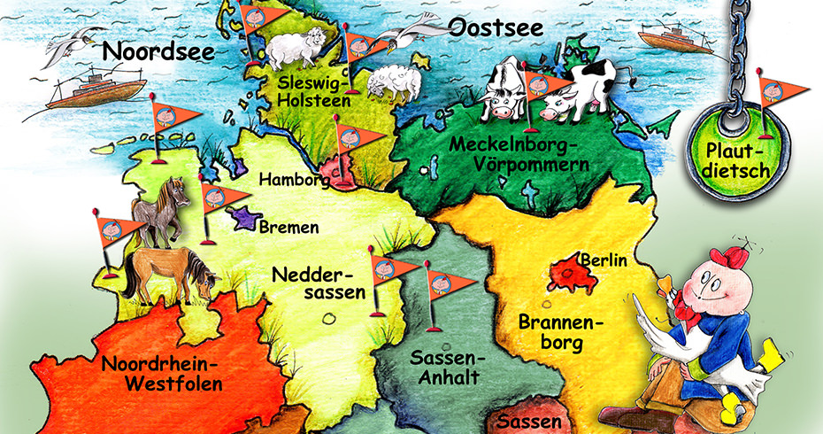

Leve Lüüd,
düsse Siet is in de Johren kamen un warrt to‘n …. afstellt.
Bi Frogen rund üm Platt mellt Jo ok geern bi dat Lännerzentrum för Nedderdüütsch in Bremen:
- info@lzn-bremen.de
- www.lzn-bremen.de
- Instagram: @lznbremen
- Kiek ok geern op:www.hanserouten.de
Wi grööt vun Harten!

Moin! Kiek, hier bün ik!
Hier kannst du malen un snacken. Maal de ünneren Bögen mit vele verschedene Buntstifte na un segg luut dorbi: „Moin, kiek, hier bün ik!“
Malen un snacken
Kiek di mal dat an! Plattolio hett Tiet un itt. Maal dat Zickzack na un segg de Riemels luut dorto.
Dat Peerd geiht dörch de Poort
Kiek mal! Dor will en Peerd dörch de Poort! Maal de Linien na un segg de Riemel luut dorto.
So föhl ik mi
 Na? Wo geiht di dat? Dat weetst du nich? Mag sien un de Würfel kann di hölpen. Würfel mal!
Na? Wo geiht di dat? Dat weetst du nich? Mag sien un de Würfel kann di hölpen. Würfel mal!
So föhl ik mi
 Na? Wo geiht di dat? Dat weetst du nich? Mag sien un de Würfel kann di hölpen. Würfel mal!
Na? Wo geiht di dat? Dat weetst du nich? Mag sien un de Würfel kann di hölpen. Würfel mal!